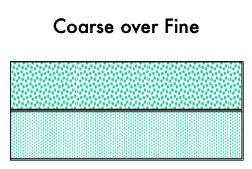
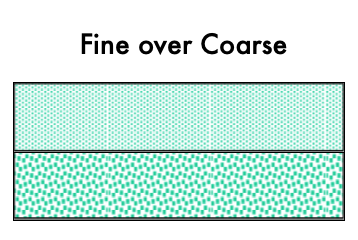

Soil Water
© 2007 Donald G. McGahan (aka soilman) All Rights Reserved
Soil water availability is a primary influencer of ecosystems. The primary repository for the majority of plants is soil water.
Water is held in soil either due to an impermeable layer preventing the water from draining (perched water), or because the water is energetically resisting drainage. In either case the plants draw on the soil water for their metabolic needs.
The metabolic need of each plant might be different, but the need can be determined and measured. Similarly, the soil water amount can be determined. However, knowing the amount of soil water is not as useful as knowing the amount of soil water that is available to the plant.
Plant available water is the water in contact with the root(s), but we would measure the amount of water in a soil volume. If the water in contact with the plant root is connected to water away, or distal, from the root, the water can flow in a continuous and connected manor to the root.
Most learners are well versed to know that water on a surface can flow down to a lower position, but some learners also are aware that water can move up!
Three overarching concepts are presented as goals of learning in this Soil Water section: (i) soil water content, (ii) soil water energy, and (iii) soil water flow rate. Practicing conceptualization of the application of these three in various combinations will forward mastery of the overall importance of soil water.
Soil Water Content
Mass (or Weight) Basis
$$\text{Mass Wetness}\%=\left(\frac{\text{Mass}\,\text{H}_2\text{O}}{\text{Mass Oven Dry soil}}\right)\times 100$$ $$\text{Mass Wetness}\%=\left(\frac{\left(\text{Mass of wet soil}\right)-\left(\text{Mass of dry soil}\right)}{\text{Mass of Oven Dry soil}}\right)\times 100$$ $$\omega = \frac{\text{M}_{\text{w}}}{\text{M}_{\text{s}}}$$ or
$$\omega\% = \frac{M_w}{M_s}\times 100$$
Where omega (ω) is the Mass Wetness, M is mass, w is water, and s is soil particles.
Volume Basis
$$\text{Volume Wetness}\%=\left(\frac{\text{Volume of H}_2\text{O}}{\text{Volume of soil}}\right)\times100$$
$$\theta\%=\frac{\text{V}_{\text{w}}}{\text{V}_{\text{T}}}\times 100$$
Where theta (θ) is Volume Wetness, V is volume, w is water, and T is total.
$$V_T=V_s+V_w+V_a$$
Where a is air.
Since one cm³ of H2O weighs one gram, we can use a measurement of the mass loss of water from saturated conditions to oven dry conditions as the volume of water contained in the sample.
Conversion between ω % and θ % can be obtained by using the ρb such that θ % = ω % × ρb. Where rho (ρ) is density and b is bulk.
Structure and Properties of Water
Water is very interesting. Because we encounter water in all three of its phases (solid, liquid, and gas) so commonly we often do not appreciate our varied experiences with water. We know to be careful when placing liquid water in a closed container and freezing it because the liquid state occupies less volume than the solid state and if we do not allow for the expansion we will burst the container.
Structure of Water
Positively charged H⁺ ions form a V-shaped arrangement with negatively charged O²⁻. The angle between the H ions is 104.5°. This arrangement results in an asymmetrical distribution of charge in which the O end is electro-negative and the H end is electro-positive. Molecules that display this uneven charge distribution are termed polar molecules. Using either - or + associated with the greek letter delta (δ) conveys the uneven expression of the distribution of charge (dipole moment) of water.
Hydrogen bonding
A basic principle of chemistry and physics is that like charges repel each other and opposite charges attract each other!
Thus, the electro-positive end of one water molecule is weakly attracted to the electronegative end of an adjacent molecule. This type of water-water attraction involving hydrogen bonding can be termed cohesion. Hydrogen bonding and other types of weak bonds can also form between water and solid surfaces such as the soil particles. This type of water-solid surface attraction is termed adhesion. Water bonded to surfaces varies from weak to strong attraction depending on proximity to the surface. The less water there is in a soil, the remaining water will have a greater proportion of these remaining water molecules closer to the soil particles and hydrogen bonded to the soil particles. The result is that a greater fraction of remaining water molecules are the less "free to move" molecules.
Capillary rise in a glass tube involves adhesion of water to the glass which pulls water molecules upward in the tube. Cohesion between water molecules allows water molecules away from the glass surface to be pulled up along with the water at the glass surface. These same principles (adhesion & cohesion) that result in capillary rise in a glass tube are active in the soil and result in water being held on surfaces and in pores.
Soil Water Energy Concepts
Soil Water is held on SURFACES by adhesive forces can be termed adsorption and in PORES the movement into the pores by the combination of the adhesive and cohesive properties of water is termed capillarity.
Forces affecting the energy level of soil water:
- Matric forces
- forces responsible for adsorption and capillarity (adhesion and cohesion).
- Osmotic forces
- the attraction of water by ions and other compounds dissolved in the water. (sodium [Na+] and chloride [Cl−] ions attract and interact with water)
- Gravity
- the force which pulls water toward the center of the earth.
- Pressure
- The positive force exerted on water in saturated conditions. See also in Glossary Positive Pore Water Pressure
These forces Interact with water and affect the energy level of the water. The difference in the energy level between soil water and that of pure water is termed the soil water potential \(\psi_T=\text{total water potential}\).
Soil water potential can be expressed in various units. We will use generally use the units of bars (1 bar ≈ 1 atmosphere), but pascals (Pa) are often used.
- Matric Potential \(\left(\psi_m\right)\)
- Attraction of water to solid-phase surfaces by adhesion and cohesion. The greater the surface area of the soil material, the greater the attraction for water. Strong attraction results in low (more negative) matric potentials. Influenced by the texture, structure, and organic matter content of the soil; those factors that influence surface area and porosity. The dryer the soil becomes, the tighter the remaining water is held. Thus, as the soil dries out, the matric potential becomes lower (more negative); as the water films become thinner, their attraction to the soil surfaces becomes stronger. The matric potential is never positive and is a negative value until saturation wherein it is zero. Glossary entry for Matric Potential
- Osmotic Potential \(\left(\psi_o\right)\)
- For soils with high salt contents, the total water potential will include osmotic potential as well as matric potential. In most humid region soils, osmotic potential is insignificant because soil solutions are rather dilute. In contrast, osmotic potential is of considerable importance in some soils of arid and semiarid regions. High salt contents result in low (more negative) water potentials. The osmotic potential, when not negligible unto zero, is negative. Glossary entry for Osmotic Potential
- Gravitational Potential \(\left(\psi_g\right)\)
- The amount of energy consumed or released to bring the soil water to a reference elevation. Gravity plays an important role in removing excess water from the upper rooting zone following heavy precipitation or Irrigation. Choice of the reference elevation is important for determination of the sign of gravitational potential. Usually the reference point is chosen that is below the elevation of interest (pool) so that the sign is usually negative. See also pressure potential since chosen reference position impacts the naming of the potential. Glossary entry for Gravitational Potential
- Pressure Potential \(\left(\psi_p\right)\)
- The pressure potential results from external pressure on the soil-water. The value is usually positive and related typically to water overlying the (pool) of interest and above the reference position. Sometimes termed submergence potential. The pressure potential and gravitational potential are related the reference and pool position must be considered with care to understand the relationship. Thus the choice of submergence potential because it is easier to conceptualize the positive pressure exerted by overlying water.
As defined by the International Society of Soil Science (1963), the total potential of soil-water is “the amount of work that must be done per unit quantity of pure water in order to transport reversibly and isothermally an infinitesimal quantity of water from a pool of pure water at a specified elevation at atmospheric pressure to the soil-water (at the point under consideration).
This total water potential \(\left(\psi_T\right)\) can be divided into the above defined parts to distinguish between the actions of different force fields. The algebraic sum of these parts or component potentials must always equal to the total water potential \(\left(\psi_T\right)\). \(\psi_T = \psi_m + \psi_g + \psi_o + \psi_p\)
Terminology
- Capillary water
- is water that is held in soil pores against the force of gravity. This generally corresponds to water held in micropores.
- Noncapillary water
- water that is not held against the force of gravity (Gravitational water) and corresponds to water held primarily in macropores.
- Field Capacity (FC)
- the maximum amount of water held by the soil after free drainage by gravity has stopped and all noncapillary water is gone. Corresponds to water held tighter than about --1/10 to --1/3 bar.
- Permanent Wilting Point (PWP)
- the water percentage of the soil at which plants can no longer extract water from the soil fast enough to maintain the metabolic processes. Corresponds to water held tighter than approximately -15 bars.
- Available Water Holding Capacity (AWHC)
- the amount of water held in the soil that is available for use by plants: AWHC% = FC% - PWP%. This can also be referred to as water retention difference.
The water AWHC is sometimes called the `water retention difference' as it is the water retained in the soil that is available for use by plants. Lerners are expected to use the terms interchangeably.
Water content is important to be sure. The above presentation squarely places the water retaned inThe volume of the soil considered is important a
Soil Water Movement
Water flow in soil needs some definition. Flow then is a quantity in volume, \(Q\), that moves over a crossectional area, \(A\), in time, \(t\).
Thus, flow is represented as \(\frac{Q}{A\cdot t}\).
The mathematical formula to describe water flow through soils is:
$$\frac{Q}{A\cdot t} = K \cdot \frac{\Delta \psi_T}{\Delta x}$$,
- \(\psi_T\) = total water potential
- \(\Delta \psi_T\) is the difference in the total potential between two points.
- \(\Delta x\) is the change in the distance, \(x\), between the two points
- \(K\) = the hydraulic conductivity (a measure of how fast water flows through a material). This is empirically determined.
- Previously defined above were:
- \(Q\) = volume
- \(A\) = area
- \(t\) = time
Types of Soil Water Movement
- Saturated flow (all pores are filled with water)
- Unsaturated flow (large pores filled with air)
- Vapor movement
I. Saturated flow is dependent on:
- Hydraulic force. Primarily gravity potential \(\left(\psi_g\right)\)
- Matric potential \(\left(\psi_m\right)\) is negligible at saturation)
-
- Hydraulic conductivity (K)
- the ease that soil pores permit water movement. Depends on the size and configuration of the soil pores.
-
- Pore radius \(\left(\alpha\right)\)
- \(\alpha^4\) This means that flow through a pore with a radius of 1 mm is equivalent to the flow in 10,000 pores having a radius of 0.1 mm. Thus, macropores will account for most of the saturated water flow.
- The texture and structure are the most important properties influencing saturated hydraulic conductivity through their influence on porosity (ω).
| Textural Class | \(\text{K}_{\text{sat}}\;\frac{\text{cm}}{\text{hr}}\) |
|---|---|
| Clay | 10-5 to 10-3 |
| Silt | 10-3 to 10-1 |
| Sand | 1 to 400 |
| Gravel | 104 to 105 |
Unsaturated flow is dependent on:
- Soil water potential \(\left(\psi_T\right)\) gradient (primarily matric potential gradient).
- Hydraulic conductivity – the hydraulic conductivity. At low matric potentials (low water contents), hydraulic conductivity is greater in clay soils compared to sandy soils. This is because the clay soils have greater capillary water content which is the primary pathway for movement of water under unsaturated conditions.
Vapor movement – very small amounts of water move as vapor, except at the very surface of the soil where high temperatures during the day lead to evaporation.
Water movement through stratified soils (alternating textures)
This the alternating texture morphologically may be referred to as a textural discontinuity, and especially so if the boundary between the two horizons of very dissimilar textures are abrupt.
- Coarse-textured material over fine-textured material
- The fine-textured materials have a much lower hydraulic conductivity which may result in water ponding above the finer layer.

- Fine-textured material over coarse-textured material
- The fine-textured material must become nearly saturated before any water will enter into the underlaying coarse material.
- Under unsaturated conditions, capillary attraction is stronger in the small pores of the fine-textured soil layer as compared to the coarse layer, In other words, the macropores of the sand offer less attraction for water than the micropores in the fine-textured material.
- Water will accumulate in the fine-textured layer until gravitational forces are greater than the capillary attraction.
- Only when the water content approaches saturation \(\left(psi_m \approxeq 0\right)\) in the fine-textured layer will the water be held loosely enough for gravity to move the water downward.

How do plants obtain water?
- Capillarity movement of water
- roots absorb water and reduce the matric potential of the water surrounding the root. The depression in water potential around the root sets up a water potential gradient in which water follows form areas of high water potential to areas of low water potential (more negative). This involves the capillary movement of water.
- Root extension
root growth into new regions of the soil establishing new root-soil contacts. Root-soil contacts usually amount to less than 1% of the total soil surface area. This is a very important mechanism used by plants to obtain water.
Summary of soil water and water flow in soils
- Water always flows from high to low energy. Water flows from regions with lower water potential (more negative \(\psi_T\)).
- Differences in soil water potential are generated by:
- Matric effects – matric potential is ≤ (negative in unsaturated soils & essentially zero in saturated soils) and depends on the water content and soil characteristics (primarily texture and structure).
- Osmotic effects (due to dissolved materials) – osmotic potential is always negative in soils (zero in pure water with no salts). But salts can move around in the soil so large osmotic gradients rarely exist. As the soil dry out, the salts concentrate and the osmotic potential becomes lower (more negative).
- Gravity – due to differences in elevation and can be positive or negative depending on the reference point.
- Water flow is primarily saturated or unsaturated (minor vapor transport).
| Criteria | Saturated | Unsaturated |
|---|---|---|
| Rate | Rapid | Slow to very slow |
| (Porosity & pore size) | (water content) | |
| Driving force | Gravity | Matric potential gradient |
| Occurrence | Infrequent | Common |
| Hydraulic Conductivity $\left(K\right)$ | Constant | Varies as a function of water content & soil properties |
- In soils with layers of contrasting particle size, the boundary between contrasting soil textures restricts the flow of soil water resulting in saturation.
- Coarse-over-fine is due to the lower hydraulic conductivity in the fine-textured soil.
- Fine-over-coarse is due to water being more strongly attracted to the micropores of the fine-textured soil then the macropores of the coarse-textured soil.